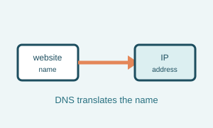
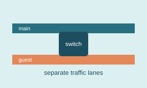
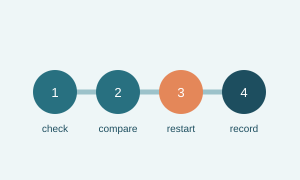

Page four
Words I had to learn
These are a few networking terms that come up often. This page is meant to be useful when I forget which box or setting does what.
Key terms
DNS
The Domain Name System translates a website name, such as example.com, into an IP address that computers can use.
DHCP
Dynamic Host Configuration Protocol gives devices network settings automatically, including an IP address.
VLAN
A Virtual Local Area Network creates a separate logical network on shared physical equipment.
Latency
Latency is the time it takes for data to travel from one place to another. Lower latency usually feels more responsive.
Bandwidth
Bandwidth is the amount of data a connection can carry in a certain amount of time. It affects how much downloading, streaming, or video calling a network can handle at once.
IP address
An IP address is a number used to identify a device on a network. A local device can have one address at home while the home network has another address facing the internet.
Visual reminders



A note about unfamiliar words
Why do the terms matter? Words make troubleshooting more precise. “The internet is slow” is a starting point, but “DNS is failing” or “latency is high” points toward a particular test.
One phrase I remember
When diagnosing a problem, start with the simplest explanation and test it before changing complicated settings.
A simple troubleshooting sequence
- Check cables, power lights, and whether the device is connected to the correct Wi-Fi network.
- Try another website or another device to find out whether the issue is isolated.
- Restart only the device that is having trouble before restarting larger parts of the network.
- Write down what happened and what changed if the problem returns.